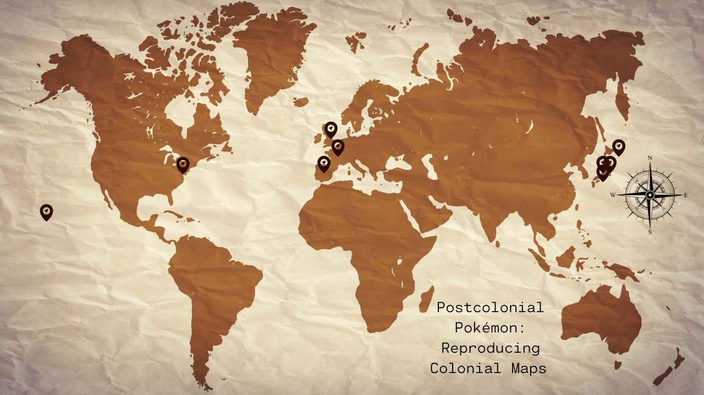

<map name="image-map">
    <area target="unova.html" alt="Unova" title="Unova" href="unova.html" coords="398,269,252,345" shape="rect">
    <area target="alola.html" alt="Alola" title="Alola" href="alola.html" coords="55,369,145,423" shape="rect">
    <area target="galar.html" alt="Galar" title="Galar" href="galar.html" coords="629,217,570,254" shape="rect">
    <area target="paldea.html" alt="Paldea" title="Paldea" href="paldea.html" coords="566,277,608,323" shape="rect">
    <area target="kalos.html" alt="Kalos" title="Kalos" href="kalos.html" coords="594,250,638,284" shape="rect">
    <area target="kj.html" alt="Kanto/Johto" title="" href="kj.html" coords="1086,284,1126,311" shape="rect">
    <area target="sinnoh.html" alt="Sinnoh" title="" href="sinnoh.html" coords="1110,244,1159,280" shape="0">
    <area target="hoenn.html" alt="Hoenn" title="" href="hoenn.html" coords="1077,318,1128,347" shape="0">
</map>